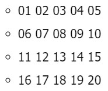
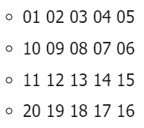

Ejercicio de arreglos
Proyectos Pseint1. Crear un vector de tipo Entero con 5 posiciones, llenarlo con información solicitada al usuario. Después de recoger toda la información, se requiere imprimir el índice de cada posición en el arreglo con su valor de la siguiente manera:
Ver codigo, punto 1.
2. Crear un arreglo de números enteros de 20 posiciones, el cual, debe ser llenado con números aleatorios entre 1 y 100; después de haber llenado dicho arreglo, se debe volver a recorrer utilizando un ciclo diferente al que se usó para llenarse e imprimir los números pares e impares. Ejemplo
Números pares: 2, 4, 6, 8, 10
Números impares: 1, 3, 5, 7, 9
3. Imprimir los números primos del 1 al 1000, el resultado debe ser buscado de forma matemática.
Ver codigo, punto 3.4. Dada la siguiente matriz bidimensional, el cual debe de quemar en el código
Utilizando el conocimiento adquirido, a excepción de hacerlo de forma manual, imprima la siguiente matriz bidimensional.
Ver codigo, punto 4.
5. Se debe de imprimir el siguiente cuadro

El usuario deberá insertar la fila y columna de la cual desea ver el resultado, el resultado de cada celda debe estar previamente calculado en una matriz bidimensional la cual cada resultado obedecerá a la fila y columna insertada por el usuario.
Ver codigo, punto 5.